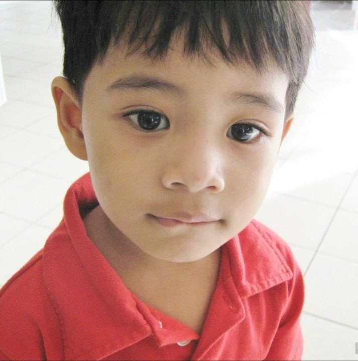
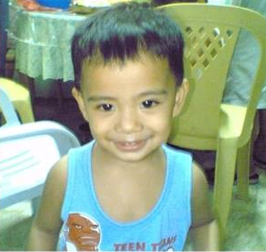

Student Profile

Name: Kurt Francis A. Rivera
CS-202
Age: 19
Birthday: July 10, 2005
Socials


Posts
Ali Ku Byasang Mangapampangan

Baby Me in Pasig
For the 15 years that I have lived in the Kapampangan region, as much as I am embarassed to admit, I still can't speak Kapampangan. It also doesn't help that we don't speak Kapampangan in our house, even though we have Kapampangan roots.
I was born in Pasig City to a Kapampangan-speaking Tarlaqueña mother, and a Tagalog-speaking Manileño father with Kapampangan descent. At the time, we were living with out paternal grandparents. It was only when I was 4 years old that we decided to live in Pampanga.
Growing up, we never used Kapampangan in our household, only Tagalog. We didn't even have Mother Tongue as a subject in elementary school, which hindered my ability to speak Kapampangan. I remember I was asked to read an excerpt from a textbook when I was in first grade. I genuinely didn't know if my teachers were praising me or making fun of me, I may never know.
It was only until I studied high school in Bamban, Tarlac where I understood Kapampangan. But alas, you can't teach an old dog new tricks, I was too old to be learning a new language, I couldn't speak it, but I could understand it, at the very least. Whenever I speak Kapampangan, my classmates would tell me "kasyas mo dila," and that's why I never really had the motivation to familiarize with the language.
So my journey starts as I approach adulthood. It must be my mission as a Kapampangan to preserve our language. Language is culture, culture is language. I will strive to learn and to speak Kapampangan, whatever it takes. Luid ya ing amanung sisuan. (tranlsated from Google Translate :P)
Next >
I plan for this to be my portfolio in the future, so expect more posts and essays in the future :D